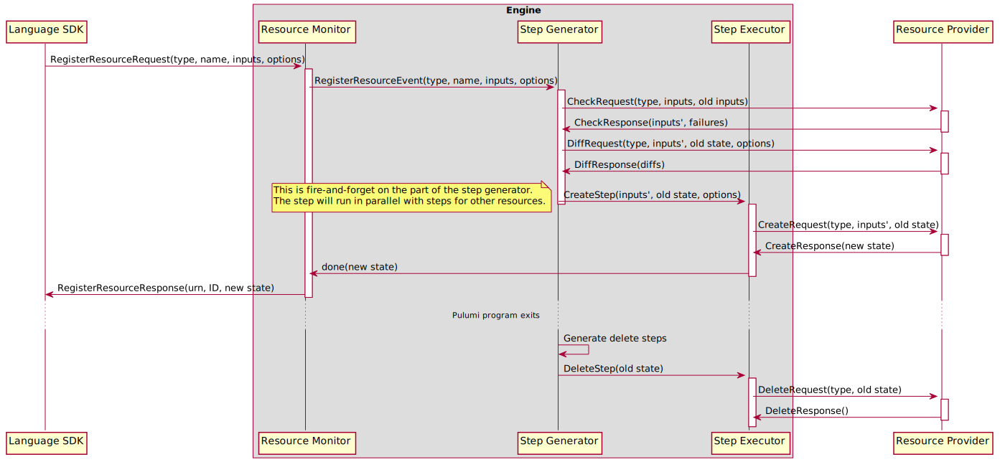

Resource Registration#
A Pulumi program declares the desired states of its stack’s resources by sending RegisterResource requests to the
Pulumi engine. Each RegisterResource request contains the type, name, and parent (if any) of the resource, a
reference to the provider instance that manages the resource (where an empty reference indicates that the resource
uses the default provider instance for its package + version), the values of the resource’s input properties, and
any options that apply to the resource. The engine decides what step to take in order to drive a resource to its
goal state by diffing the resource’s current state as present in the statefile with its desired state. If there is
no current state, the resource is created. Otherwise, the engine calls the resource’s provider’s Diff method to
determine wither the resource is unchanged, updated, or replaced. Once the required action (or actions, in the case
of a replacement) has been determined, the engine calls the resource’s provider’s Create, Update, or Delete
methods to perform it. After the action completes, the engine returns the new state of the resource to the Pulumi
program.
Although we typically treat the engine as a single unit, in the case of resource registrations it helps to break it
down into a few of its internal components: the resource monitor, the step generator, and the step executor. Each
of these components is a participant in the response to a RegisterResourceRequest.
The Resource Monitor#
The resource monitor provider serves the ResourceMonitor gRPC interface, and provides a shim between language SDKs
and the rest of the engine. There is a single resource monitor per deployment. As the engine’s feature set has grown,
the resource monitor has taken on responsibilities beyond its original use as a simple marshaling/unmarshaling layer.
It is now responsible for handling default providers (providers for resource registrations that do not reference a
provider instance) and for dispatching RegisterResourceRequests for multi-language components into appropriate
Construct calls.
When the resource monitor receives a resource registration, it does the following:
Unmarshals data from the gRPC wire format to the engine’s internal representation.
If the registration request does not name a provider instance, handles the resolution of the resource’s default provider.
If the request is for a multi-language component, dispatches a
Constructcall to the component’s provider and waits for the result.If the request is not for a multi-langauge component, sends a
RegisterResourceEventto the step generator and waits for the result.Marshals the result of the
Constructcall orRegisterResourceEventfrom the engine’s internal representation to the gRPC wire format and returns from the RPC call.
Default Providers#
Default providers demand some amount of special attention. A default provider for a package and version is the provider instance that is used for resources at that package and version that do not otherwise reference a provider instance when they are registered. For example, consider the following program that creates an AWS S3 bucket:
import * as aws from "@pulumi/aws";
new aws.s3.Bucket("myBucket");
The constructor call will become a RegisterResourceRequest like:
RegisterResourceRequest{
type: "aws:s3/bucket:Bucket",
name: "myBucket",
parent: "urn:pulumi:dev::project::pulumi:pulumi:Stack::project",
custom: true,
object: {},
version: "4.16.0",
}
Because this request does not contain a value for the provider field, it will use the default provider for the
aws package at version 4.16.0. The resource monitor ensures that only a single default provider instance exists
for each particular package version, and only creates default provider instances if they are needed. Default provider
instances are registered by synthesizing an appropriate RegisterResourceEvent with input properties sourced from the
stack’s configuration values for the provider’s package. In the example above, the AWS default provider would be
configured using any stack configuration values whose keys begin with aws: (e.g. aws:region).
If we change the program slightly to create and reference a provider instance, the default provider will no longer be used:
import * as aws from "@pulumi/aws";
const usWest2 = new aws.Provider("us-west-2", {region: "us-west-2"});
new aws.s3.Bucket("myBucket", {}, {provider: usWest2});
The constructor call will become a RegisterResourceRequest like:
RegisterResourceRequest{
type: "aws:s3/bucket:Bucket",
name: "myBucket",
parent: "urn:pulumi:dev::project::pulumi:pulumi:Stack::project",
custom: true,
object: {},
provider: "urn:pulumi:dev::vpc-2::pulumi:providers:aws::us-west-2::308b79ee-8249-40fb-a203-de190cb8faa8",
version: "4.16.0",
}
Note that this request does contain a value for the provider field.
The Step Generator#
The step generator is responsible for processing RegisterResourceEvents from the resource monitor. The generator
implements the core logic that determines which actions to take in order to drive the actual state of a resource to
its desired state as represented by the input properties in its RegisterResourceEvent. In order to simplify
reasoning about the actual state of a stack’s resources, the step generator processes RegisterResourceEvents
serially. It is important to note that this approach puts the step generator on a deployment’s critical path, so
any significant blocking in the step generator may slow down deployments accordingly. In the case of updates, step
generator latency is generally insignificant compared to the time spent performing resource operations, but this is
not the case for updates where most resources are unchanged or for previews, which spend very little time in resource
providers in general.
When the step generator receives a RegisterResourceEvent, it does the following:
Generate a URN for the resource using the resource’s type, name, and parent.
Look up the existing state for the resource, if any. If the event contains aliases for the resource, this includes checking for existing state under those aliases. It is an error if a resource’s aliases match multiple existing states.
Pre-process input properties for ignored changes by setting any properties mentioned in the event’s ignore changes list to their old value (if any)
If the event indicates that the resource should be imported, issue an
ImportStepto the step executor and return.Call the resource’s provider’s
Checkmethod with the event’s input properties and the resource’s existing inputs, if any. The existing inputs may be used by the provider to repopulate default values for input properties that are automatically generated when the resource is created but should not be changed with subsequent updates (e.g. automatically generated names).Checkreturns a pre-processed bag of input values to be used with later calls toDiff,Create, andUpdate.Invoke any analyzers for the stack to perform additional validation of the resource’s input properties.
If the resource has no existing state, it is being created. Issue a
CreateStepto the step executor and return.Diff the resource in order to determine whether it must be updated, replaced, delete-before-replaced, or has no changes. Diffing is covered in detail later on, but typically consists of calling the reosource’s provider’s
Diffmethod with the checked inputs from step 5.If the resource has no changes, issue a
SameStepto the step executor and return.If the resource is not being replaced, issue an
UpdateStepto the step executor and return.If the resource is being replaced, call the resource’s provider’s
Checkmethod again, but with no existing inputs. This call ensures that the input properties used to create the replacement resource do not reuse generated defaults from the existing resource.If the replacement resource is being created before the original is deleted (a normal replacement), issue a
CreateStepand aDeleteStepto the step executor and return.At this point, the resource must be deleted before its replacement is created (this is the “delete-before-replace” case). Calculate the set of dependent resources that must be deleted prior to deleting the resource being replaced. The details of this calculation are covered in a later section. Once the set of deletions has been calculated, issue a sequence of
DeleteSteps followed by a singleCreateStepto the step executor.
Note that all steps that are issued to the step generator are fire-and-forget. Once steps have been issues, the step
generator moves on to process the next RegisterResourceEvent. It is the responsibility of the step executor to
communicate the results of each step back to the resource monitor.
Once the Pulumi program has exited, the step generator determines which existing resources must be deleted by taking the difference between the set of registered resources and the set of existing resources. These resources are scheduled for deletion by first sorting the list of resources to delete using the topological order of their reverse-dependency grapth, then decomposing the list into a list of lists where each list can be executed in parallel but a previous list must be executed to completion before advancing to the next list.
In lieu of tracking per-step dependencies and orienting the step executor around these dependencies, this approach provides a conservative approximation of which deletions can safely occur in parallel. The insight here is that the resource dependency graph is a partially-ordered set and all partially-ordered sets can be easily decomposed into antichains–subsets of the set that are all not comparable to one another (in this definition, “not comparable” means “do not depend on one another”).
The algorithm for decomposing a poset into antichains is:
While there exist elements in the poset,
a. There must exist at least one “maximal” element of the poset. LetE_maxbe those elements.
b. Remove all elements E_max from the poset.E_maxis an antichain.
c. Goto 1.
Translated to a resource dependency graph:
While the set of condemned resources is not empty:
a. Remove all resources with no outgoing edges from the graph and add them to the current antichain.
b. Goto 1.
The resulting list of antichains is a list of list of delete steps that can be safely executed in parallel. Since deletes must be processed in reverse order (so that resources are not deleted prior to their dependents), the step generator reverses the list and then issues each sublist to the step executor.
Resource Diffing#
Although resource diffing is simple in most cases, there are several possibilities that the step generator must consider as part of performing a diff. The algorithm for diffing a resource is outlined here.
If the resource has been marked for replacement out of band (e.g. by the use of the
--target-replacecommand-line option of the Pulumi CLI), the resource must be replaced.If the resource’s provider has changed, the resource must be replaced. Default providers are allowed to change without requiring replacement if and only if the provider’s configuration allows the new default provider to continue to manage existing resources (this is intended to allow default providers to be upgraded without requiring that all the resources they manage are replaced).
If the engine is configured to use pre-1.0-style diffs, compare the resource’s old and new inputs. If the old and new inputs differ, the resource must be updated.
Otherwise, call the resource’s provider’s
Diffmethod with the resource’s new inputs, old state, and ignore changes set to determine whether the resource has changed, and if so, if it must be replaced.
Once the diff has been calculated, the step generator applies any replace-on-change options specified by the resource. These options force a resource to require that it is replaced if any of a particular set of properties has changed.
Dependent Replacements#
When a resource must be deleted before it is replaced–whether this is required by the resource’s provider or is forced
using the deleteBeforeReplace resource option–it may be necessary to first delete dependent resources. The step
generator does this by taking the complete set of transitive dependents on the resource under consideration and
removing any resources that would not be replaced by changes to their dependencies. It determines whether or not a
resource must be replaced by substituting unknowns for any input properties that may change due to deletion of the
resources their value depends on and calling the resource’s provider’s Diff method.
This is perhaps clearer when described by example. Consider the following dependency graph:
In this graph, all of B, C, D, E, and F transitively depend on A. It may be the case, however, that changes to the
specific properties of any of those resources R that would occur if a resource on the path to A were deleted and
recreated may not cause R to be replaced. For example, the edge from B to A may be a simple dependsOn edge such that
a change to B does not actually influence any of B’s input properties. More commonly, the edge from B to A may be due
to a property from A being used as the input to a property of B that does not require B to be replaced upon a change.
In these cases, neither B nor D would need to be deleted before A could be deleted.
The Step Executor#
The step executor is responsible for executing sequences of steps (called “chains”) that perform the resource actions for a deployment. These chains are issued by the step generator, and most often consist of a single step. While the steps the make up a chain must be performed serially, chains may be executed in parallel. The step executor uses a (potentially infinite) pool of workers to execute steps. Once a step completes, the step executor communicates its results to the resource monitor if necessary. If a step fails, the step executor notes the failure and cancels the deployment. Once the Pulumi program has exited and the step generator has issued all required deletions, the step executor waits for all outstanding steps to complete and then returns.
Example Resource Registration Sequences#
Custom Resources#
Each of the diagrams below demonstrates a sequence of events that occur when a custom resource is registered. Examples are given for each possible action: create, update, replace, delete-before-replace, import, and no change.
Create#
Update#
Replace#

Delete-before-replace#
Import#

No change#
Multi-language Components#
The diagram below illustrates the sequence of events that occurs when a multi-language component is registered. The registration of the component’s children is elided.